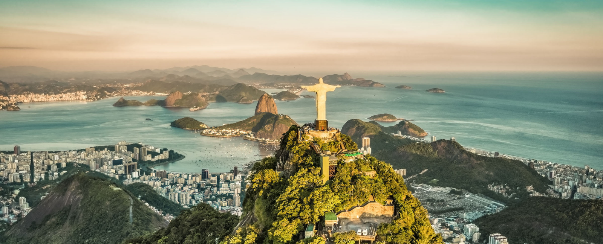
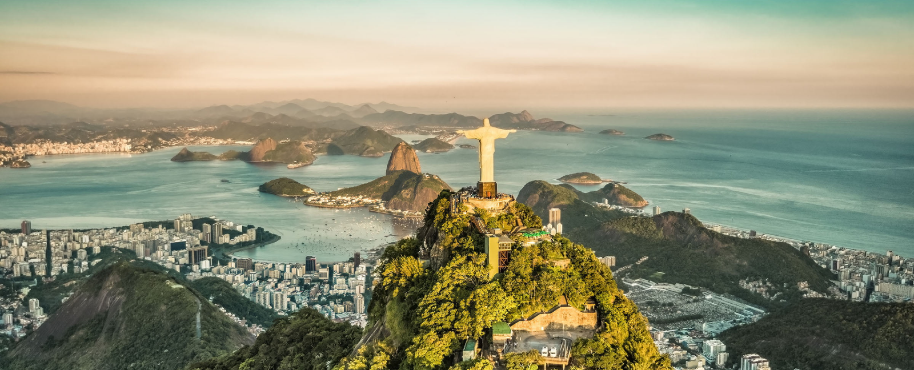

Страна
Достопримечательность
Христос-Искупитель - это не просто статуя, это символ веры, милосердия и мира, воплощенный в камне и бетоне. Ее возведение началось в 1922 году и заняло 9 лет. Статуя была задумана как символ христианства и благословение для города и его обитателей.
Высота статуи достигает 30 метров, а с пьедесталом - более 38 метров. Искусство создания такой монументальной конструкции требовало мастерства инженеров и скульпторов. Величественная статуя изображает Иисуса Христа с распростертыми руками, в знак благословения и принятия всех людей.
С вершины горы Корковадо, где установлена статуя, открываются потрясающие виды на Рио-де-Жанейро и его окрестности. Это место привлекает тысячи паломников, туристов и местных жителей, которые приходят сюда, чтобы помолиться, насладиться красотой природы и почувствовать духовное вдохновение.
Смотреть видео: